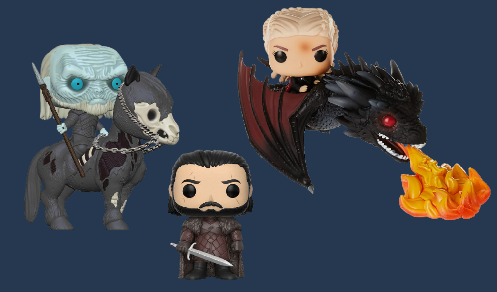

Assets
Music

As The game Game of Winter is practically based on the show Game Of Thrones, We will use the same credits and theme tune for the Game Of Winter as in the show.
Sound Effects
Game of Winter like Game Of Thrones, is based on different genres; drama, action, horror, blood, humor, conspiracy, adventure suspense, thrill, romance, death, war etc. So the sound effects would match according to the scene.
2D / 3D Models
We will be using 3D Models for our assets such as characters, game enviornment, scenarios, the Iron Throne and iconic things like that etc. These 3D models are Funko Pop versons of the real life characters.
Menu